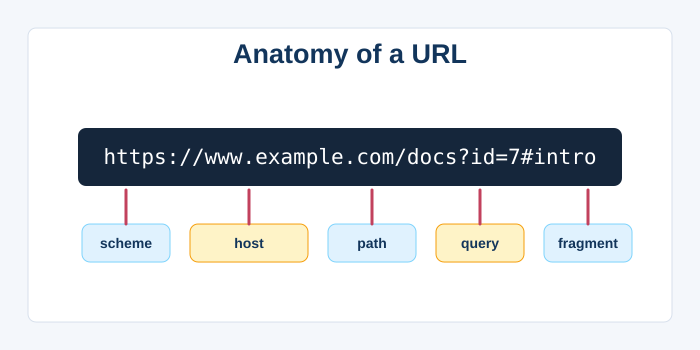
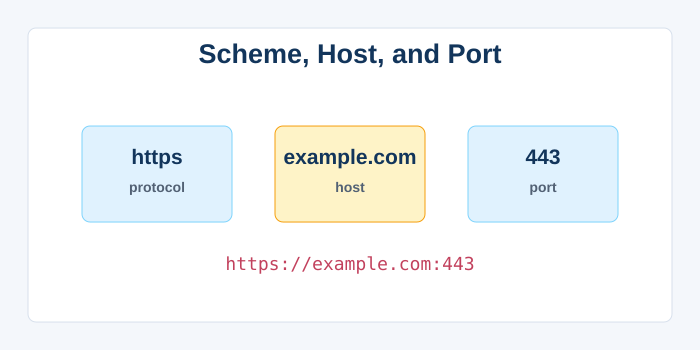
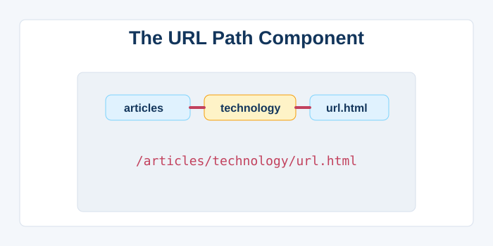
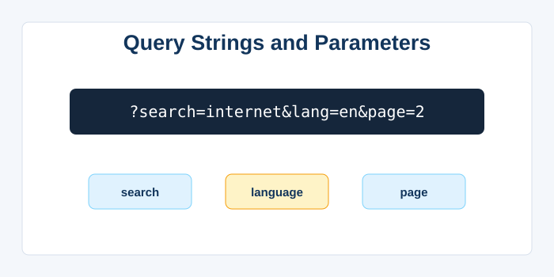
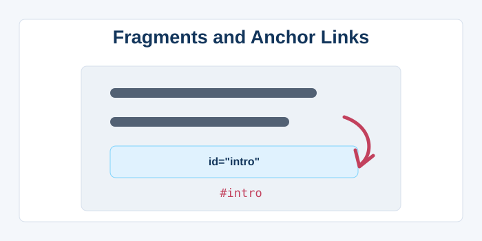
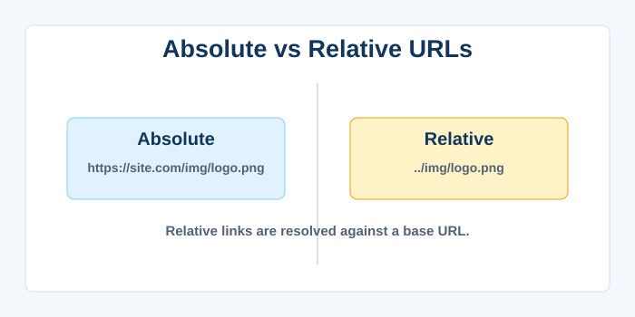
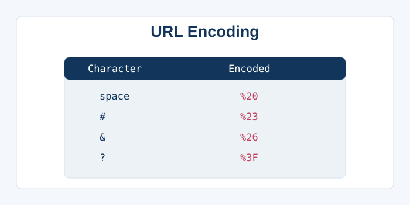
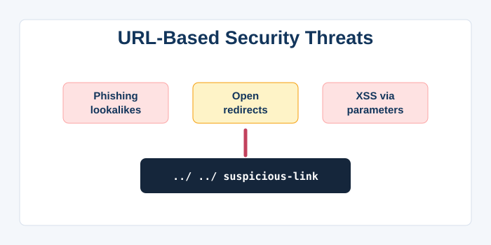

Uniform Resource Locator (URL)
1. Definition and Purpose
A Uniform Resource Locator, universally known by its acronym URL, is the standard address used to identify and locate a specific resource on the internet. Whether it's a web page, an image, a downloadable file, or an API endpoint, every publicly accessible online resource has a unique URL that points directly to it. The URL was designed to be human‑readable yet precise enough for machines to parse and act upon. It is a subset of the broader concept of Uniform Resource Identifiers (URIs), which also includes Uniform Resource Names (URNs) that identify resources by name in a persistent, location‑independent manner. The URL breaks down the complexities of networking into a simple string that a user can type or click, hiding the underlying IP addresses and server paths. It is composed of several mandatory and optional parts, including a scheme (protocol), a host (domain or IP), an optional port, a path, and a query string. This standardisation, first formalised by Tim Berners‑Lee in RFC 1738, allows any browser, programming language, or command‑line tool to access resources in a consistent way. URLs are not only used for web browsing; they are embedded in hyperlinks, QR codes, email messages, and even printed on physical advertisements. They have become so ingrained in daily life that entire business models—like link shortening services (bit.ly, TinyURL)—exist around managing and optimizing them. In essence, the URL is the street address of the digital world, making the immense chaos of the internet navigable and orderly.

2. Anatomy of a URL: Scheme, Host, and Port
A typical URL like `https://www.example.com:443/path/to/file.html?key=value#section` is composed of several distinct parts. The **scheme** (first part before `://`) indicates the protocol to use—most commonly `http` or `https`, but also `ftp`, `mailto`, `file`, or custom application schemes. It tells the client (e.g., the browser) how to access the resource. Next is the **host**, which can be a domain name (like `www.example.com`) or an IP address; this identifies which server on the network hosts the resource. After the host, an optional **port** number (separated by a colon) may be specified; if omitted, the default port for the scheme is used (80 for HTTP, 443 for HTTPS). For example, `http://example.com:8080` explicitly tells the browser to connect to port 8080 instead of the default 80. The scheme and host are case‑insensitive, though the convention is to use lowercase. Special characters in the host are percent‑encoded to avoid confusion with URL syntax. Internationalised domain names (IDNs) allow non‑ASCII characters in the host using Punycode encoding. The port mechanism allows a single server to run multiple services on different ports, each accessible via distinct URLs. Together, the scheme, host, and port uniquely identify the endpoint and the protocol for communication. It is this precision that enables the internet’s vast, heterogeneous ecosystem to work together seamlessly, directing requests to the right software on the right machine.

3. The Path Component
The path in a URL specifies exactly which resource on the server is being requested, analogous to a file path on a traditional file system. It comes after the host (and port, if present) and begins with a forward slash (`/`). A path like `/articles/technology/web-servers.html` implies a hierarchical structure of directories leading to a specific file. However, in modern web applications, the path often maps to a virtual route or an endpoint in a framework, not to an actual file on disk. For example, `/user/123/profile` might trigger a database lookup for user 123 rather than looking for a folder named `123`. The path is case‑sensitive on Unix‑based servers (like Apache on Linux) but case‑insensitive on Windows servers, which can lead to subtle differences. URL paths that end with a trailing slash often represent a directory index, though the behaviour is configurable. Dynamic segments can be embedded directly in the path using clean URLs, making them more user‑friendly and SEO‑friendly than older query‑string‑only approaches. Path segments are separated by slashes, and each segment may contain letters, digits, hyphens, and underscores; other characters must be percent‑encoded. The path can also contain a filename with an extension (`.html`, `.jpg`, `.pdf`), which hints at the content type, though the server ultimately sets the MIME type via headers. Understanding the path is essential for designing RESTful APIs and intuitive website URLs that enhance user experience. In a well‑designed URL, the path reads like a breadcrumb trail, giving users a mental map of the site’s structure.

4. Query Strings and Parameters
Following the path, a URL can include a query string, which starts with a question mark (`?`) and contains one or more key‑value pairs separated by ampersands (`&`). For instance, `?search=internet&lang=en&page=2` sends three parameters to the server: `search`, `lang`, and `page`. Query strings provide a simple way to pass data to a server for filtering, sorting, searching, and pagination. They are also used in tracking links (UTM parameters) to monitor marketing campaign performance. The keys and values are typically URL‑encoded to safely include spaces (as `+` or `%20`) and special characters like `=`, `&`, and `#`. Although query strings are visible in the browser’s address bar, they can be sent in HTTP GET requests; POST requests usually embed parameters in the request body instead. Web frameworks provide easy ways to parse query parameters, and modern single‑page applications use them to maintain shareable application state with client‑side routing. Search engines generally index URLs with query strings, but canonicalisation techniques prevent duplicate content when the same page is reachable with different parameter orders. In RESTful API design, query parameters are typically used for optional filtering, while path parameters identify a specific resource. The maximum length of a URL, including the query string, is technically unlimited by the HTTP spec, but practical limits (around 2,000 characters) are imposed by browsers and servers to avoid abuse. Despite their simplicity, query strings remain one of the most versatile and widely used features of the URL syntax.

5. Fragments and Anchor Links
The fragment identifier, introduced by a hash symbol (`#`), refers to a specific section or location within the resource itself. Unlike the path and query string, the fragment is not sent to the server; it is processed entirely by the client (browser) after the page is loaded. The most common use is linking to an element with a matching `id` attribute, such as `#section‑5`, which causes the browser to scroll that element into view. Fragments enable smooth single‑page navigation and are the foundation of older “hash‑based” routing in JavaScript applications. In modern web apps, the fragment can be used to maintain state without reloading the page, though the History API has largely superseded this for cleaner URLs. For documents served with a text/html MIME type, the fragment can also reference named anchors. In other media types, its meaning varies—for example, in XML or SVG, it may have a specific interpretation. Browser extensions can also use fragments to activate certain behaviours. Because the fragment is never included in HTTP requests, it is not logged by the server, making it unsuitable for server‑side analytics but useful for client‑side tracking. When sharing a URL with a fragment, the recipient will land on the exact section of the page intended, improving user experience in long documents. The fragment’s client‑side nature has also been leveraged by decentralised web technologies like IPFS to create immutable, content‑addressable links.

6. Absolute vs. Relative URLs
In web development, it is crucial to distinguish between absolute and relative URLs, each serving different purposes in hyperlinking and resource loading. An absolute URL contains the full scheme, host, and path, providing a complete, unambiguous address that works from anywhere. For example, `https://example.com/images/logo.png` is absolute and will resolve correctly regardless of the page it’s on. A relative URL, such as `images/logo.png` or `../styles/main.css`, specifies a location relative to the current page’s URL. Relative URLs are shorter, more portable, and easier to maintain within a website; if the domain changes, most links keep working without modification. They are resolved by the browser against a base URL, which can be the current document’s URL or a `

7. URL Encoding and Special Characters
Since URLs can only contain a limited set of characters from the US‑ASCII charset, any character outside this set must be percent‑encoded. Percent‑encoding replaces unsafe characters with a `%` followed by two hexadecimal digits representing the character’s byte value. For example, a space is encoded as `%20`, and the `#` symbol (when not used as a fragment delimiter) becomes `%23`. Reserved characters like `?`, `&`, `=`, and `/` have special meanings in URLs, and encoding them when used in a different context is essential to avoid misinterpretation. Non‑ASCII characters, such as those in Chinese, Arabic, or emoji, are first converted to UTF‑8 bytes, then percent‑encoded byte‑by‑byte. The `encodeURI()` and `encodeURIComponent()` functions in JavaScript provide different levels of encoding for full URLs versus individual query string values. Improper encoding can lead to broken links, security vulnerabilities like XSS, or injection attacks when URLs are concatenated carelessly. In the host part, international domain names use Punycode (e.g., `xn--fsq.com` for `😊.com`), but the rest of the URL still uses percent‑encoding for non‑ASCII bytes. HTTP servers and web frameworks automatically decode these characters when processing requests, making the original values accessible to developers. Understanding URL encoding is vital for anyone constructing dynamic links, handling form submissions, or parsing log files. It ensures data integrity across the diverse languages and character sets of a global internet.

8. Security and URL‑Based Threats
Because URLs are visible, editable, and shareable, they are frequent vectors for cyberattacks and social engineering. Phishing attacks often use deceptive URLs that mimic legitimate sites (e.g., `paypa1.com` or using a misleading subdomain like `paypal.secure‑login.com`). Homograph attacks exploit internationalised characters that look identical to Latin letters—such as the Cyrillic ‘а’ (U+0430) substituting for ‘a’—to create visually identical domain names. Open redirects occur when an application blindly forwards users to a URL passed as a parameter, potentially leading to malware sites while appearing to come from a trusted domain. Cross‑site scripting (XSS) can be triggered when unsanitized URL parameters are reflected into the page’s HTML. Directory traversal attacks attempt to break out of the web root by manipulating paths with sequences like `../../../etc/passwd`. To mitigate these risks, modern browsers display the punycode version of suspicious domains, certificate authorities vet domain ownership, and frameworks provide automatic escaping. URL shorteners, while convenient, obfuscate the true destination, making it easier for attackers to mask malicious links. Users should be trained to hover over links to preview the actual URL and look for HTTPS indicators before entering sensitive information. Security‑conscious web applications validate and sanitise all URL input, use parameterised queries, and avoid reflecting user‑controlled URLs directly into responses. In an era of ubiquitous connectivity, the humble URL is a critical line of defence in the cybersecurity perimeter.
